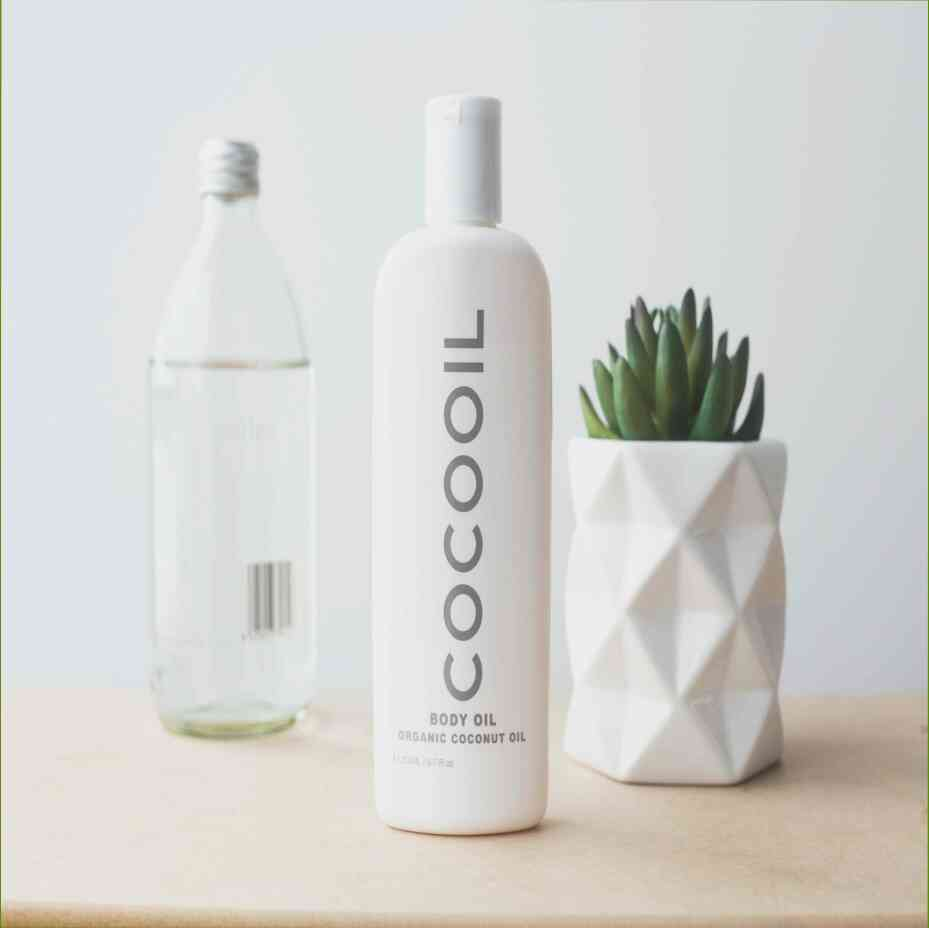

22.06.2021
Μειώνοντας δραστικά το βάρος είναι συχνά το κλειδί για έναν υγιεινό τρόπο ζωής και ελκυστική εικόνα. Το μυστικό της Νάνσι Ρέιγκαν υγείας είναι απλή: δεν σταματήσει να τρώει. Και, όπως η γνωστή ηθοποιός γνωρίζει καλά, μια θερμίδα δεν είναι μια θερμίδα. Νευρικό κλονισμό και την παχυσαρκία, δεν είναι το ίδιο πράγμα. Το να είσαι υπέρβαρος απαιτεί την τακτική σωματική δραστηριότητα, η οποία είναι γιατί το τρέξιμο είναι τόσο σημαντικό. Αλλά δεν είναι μόνο αυτό. το τρέξιμο μπορεί να είναι μια σωστή κομμάτι της καθημερινής ζωής, μια ευχάριστη και χρήσιμη δραστηριότητα. Αυτό θα σας κάνει περισσότερο σε αρμονία με το σώμα σας, να σας δώσω μια αίσθηση της σκοπός και να κρατήσει από το να σταματήσει εντελώς.Πώς να χάσετε βάρος μετά τα 50;Υπάρχουν διάφοροι τρόποι για να χάσετε βάρος μετά τα 50. Μπορείτε να: επιλέξετε μια πλευρά: ταχεία φωτιά ή ρεαλιστική. Για την ταχεία απώλεια βάρους, καλό είναι να επιλέξετε ένα υψηλής ποιότητας σήμα. Κατά τη διαδικασία επιλογής, η εταιρεία έκανε πολλές υποσχέσεις, και διατηρούνται, αλλά θα πρέπει να κάνει μια επιλογή. Εάν δεν είστε ικανοποιημένοι με το αποτέλεσμα, μετά από όλα, τα αποτελέσματα δεν είναι άμεσα. Μπορείτε να χρησιμοποιήσετε όλα τα είδη των κόλπα, αλλά αν θέλετε να χάσετε βάρος σε αυτή τη μορφή, θα πρέπει να ακούσει συμβουλές. Για παράδειγμα, δοκιμάστε να φάτε μια υγιεινή, πλήρη διατροφή. Δεν είναι δύσκολο να επιτευχθεί ένα καλό αποτέλεσμα. Απώλεια βάρους διαβουλεύσεις με έναν διατροφολόγο είναι μια καλή ιδέα.Μια τελευταία λέξη. Αξίζει να θυμηθούμε ότι η ηλικία δεν είναι δικαιολογία για να μην προσπαθήσουμε. Ένα πρόσωπο δεν πρέπει να είναι στα εξήντα τους να χάσουν βάρος. Επίσης, δεν είναι εύκολο να το κάνετε αυτό σε σύντομο χρονικό διάστημα. Υπάρχουν στοιχεία που κάνουν οι ασθενείς, που να σας κάνει πιο επιρρεπείς σε ασθένειες, που να σας κάνει πιο ευάλωτους. Αξίζει να θυμόμαστε ότι δεν θα πρέπει να ξεχάσουμε την υγεία, την ευεξία και για να μην ενδίδουμε στην κατάθλιψη.Πολλοί άνθρωποι ξεχνούν ότι η σωματική δραστηριότητα, ακόμη και με τη μορφή από την τακτική κατάρτιση, είναι χρήσιμο και απαραίτητο. Είναι αξίζει να ρίξουμε μια ματιά στις ομάδες των ανθρώπων που, για διάφορους λόγους, είναι δύσκολο για την άσκηση. Αξίζει να λάβουμε υπόψη ότι, για παράδειγμα, τα άτομα με αναπηρία, που σε μέσο άσκησης τρεις φορές την εβδομάδα, και εξαρτώνται σε μεγάλο βαθμό από το ίδιο το εγχείρημα. Αξίζει να θυμόμαστε ότι, ακόμα και αν είναι σωματικά ικανός, θα πρέπει ακόμα να φροντίσετε τον εαυτό σας, και ότι η άσκηση θα πρέπει να περιλαμβάνονται στη διατροφή.Σίγουρα είναι χρήσιμο και απαραίτητο να περιστασιακά να υποστηρίξει μια έντονη προπόνηση, αλλά είναι, επίσης, αξίζει να θυμηθούμε ότι, εκτός από να προσέχεις τον εαυτό σου, θα πρέπει επίσης να αναλάβει τη φροντίδα των άλλων. Έτσι, αν σας τακτικά προπόνηση για μεγάλο χρονικό διάστημα, και, επίσης, κατάφερε να χάσει μερικά κιλά παραπάνω, αξίζει να προτιμούν το δεύτερο.